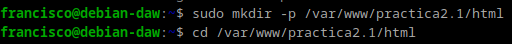
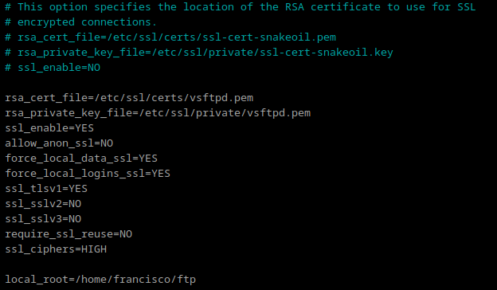

Práctica 2.1 Instalación y configuración de servidor web Nginx
Instalación del servidor
Antes de instalar, actualizamos los repositorios sudo apt update y después instalamos el paquete sudo apt install nginx.
Comprobamos que se ha instaldo y que está funcionando correctamente con el comando systemctl status nginx.
Creación de las carpetas del sitio web
Creamos la carpeta de nuestro sitio web con el comando sudo mkdir -p /var/www/practica2.1/html.

Dentro de esta carpeta, clonamos el siguiente repositorio de github:
https://github.com/cloudacademy/static-website-example

Hacemos al usuario www-data propietario de esta carpeta, con el comando
sudo chown -R www-data:www-data /var/www/nombre_web/html

Desde nuestro equipo cliente accedemos a la ip del servidor http://192.168.1.143 desde un navegador y debería de salir algo como esto:

Configuración de servidor web NGINX
Creamos un archivo de configuración que es la página que se muestra si accedemos al servidor sin indicar ningún sitio web.
sudo nano /etc/nginx/sites-available/practica2.1
En este archivo de configuración, hay que poner lo siguiente:
server {
listen 80;
listen [::]:80;
root /var/www/practica2.1/html/static-website-example;
index index.html index.htm index.nginx-debian.html;
server_name nombre_web;
location / {
try_files $uri $uri/ =404;
}
}
Creamos un archivo simbólico entre este archivo y el de sitios que
están habilitados, para que se dé de alta automáticamente
con sudo ln -s /etc/nginx/sites-available/practica2.1 /etc/nginx/sites-enabled/.
Comprobaciones
En nuestra máquina anfitriona tenemos que editar el archivo C:\Windows\System32\drivers\etc\hosts. Y añadir:
192.168.1.143 practica2.1
FTP
FTP es un protocolo de transferencia de archivos entre sistemas conectados a una red TCP. Actualmente, es un protocolo que poco a poco va abandonándose, pero ha estado vigente más de 50 años.
Configurar servidor SFTP en debian
Primero actualizamos los repositorios sudo apt-get update, después instalamos
el paquete.
sudo apt-get install vsftpd
Creamos una carpeta en el home de debian
mkdir /home/francisco/ftp

Creamos los certificados de seguridad necesarios para aportar la capa de cifrado a nuestra conexión
sudo openssl req -x509 -nodes -days 365 -newkey rsa:2048 -keyout /etc/ssl/private/vsftpd.pem -out /etc/ssl/private/vsftpd.pem
Editamos el archivo de configuración de este servicio sudo nano /etc/vsftpd.conf
rsa_cert_file=/etc/ssl/private/vsftpd.pem
rsa_private_key_file=/etc/ssl/private/vsftpd.pem
ssl_enable=YES
allow_anon_ssl=NO
force_local_data_ssl=YES
force_local_logins_ssl=YES
ssl_tlsv1=YES
ssl_sslv2=NO
ssl_sslv3=NO
require_ssl_reuse=NO
ssl_ciphers=HIGH
local_root=/home/nombre_usuario/ftp

Reiniciamoss el servicio para cojer la nueva configuración sudo systemctl restart --now vsftpd.
Desde el equipo cliente, abrimos el programa filezilla y nos concetamos al servidor Debian. Y subimos un archivo a la carpeta /home/francisco/ftp.
Desde el Debian ya podemos ver el archivo subido:

HTTPS
En este apartado vamos a añadir a nuestro servidor una capa de seguridad necesaria. Haremos que todos nuestros sitios web alojados hagan uso de certificados SSL y se acceda a ellos por medio de HTTPS.
Creación de certificado
Primero vamos a crear un directorio para almacenar los certificados sudo mkdir /etc/ssl/certificados.
Generamos la clave privada sudo openssl genpkey -algorithm RSA -out /etc/ssl/certificados/clave_privada.key.
Y por ultimo generamos un certificado autofirmado sudo openssl req -new -x509 -key /etc/ssl/certificados/clave_privada.key -out /etc/ssl/certificados/certificado_autofirmado.crt -days 365.

Configuración de Nginx
Vamos a configurar el archivo de nginx /etc/nginx/sites-available/default.

Reiniciamos Nginx sudo systemctl restart nginx.